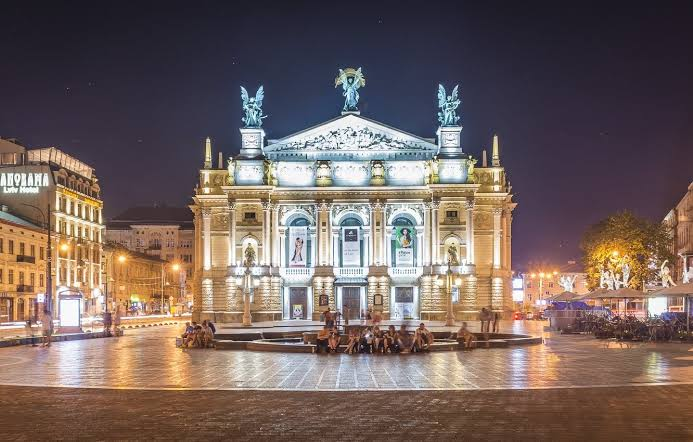

Коротка характеристика
Львів — душевне культурне серце Західної України, відоме своєю європейською архітектурою та кавовою культурою.
Чому саме Львів?
Це місто чудово підходить для піших прогулянок, має неймовірну атмосферу затишку, старовинні бруковані вулиці та багату історію.
Цікаві факти
- Історичний центр Львова занесений до Спадщини ЮНЕСКО.
- У Львові винайшли першу у світі гасову лампу.
Визначні місця
- Площа Ринок та Ратуша
- Високий Замок
- Львівський оперний театр
Особиста оцінка
Оцінка: 10/10 — улюблене місто для відпочинку та гармонії.
Додаткова інформація: Офіційний портал Львова